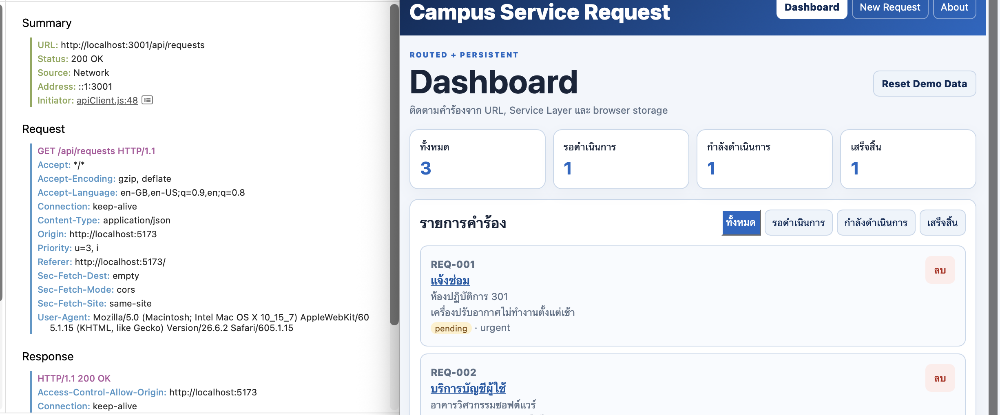
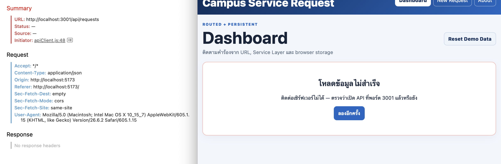
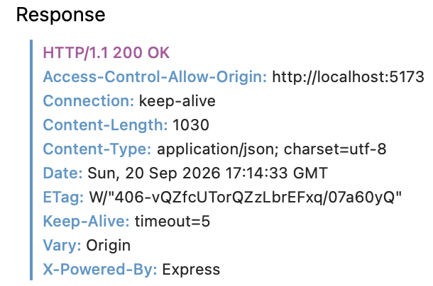

รายละเอียดผลงาน
เชื่อม React กับ REST API พร้อม CORS, validation และสถานะ loading/error
ผลตรวจ: งานหลัก 33/33Version:
lab-07-submission-v1เดโมนี้ใช้ข้อมูลในเบราว์เซอร์ แยกจาก API และฐานข้อมูลจริง ดูการทำงานฝั่งเซิร์ฟเวอร์และผลทดสอบได้จาก Source Code และหลักฐานด้านล่าง
ภาพหลักฐาน (3)






เอกสารและผลการทดสอบ
API_CONTRACT.md
# 9c — Campus Service Request API
## 1. ข้อมูลทั่วไป
| หัวข้อ | รายละเอียด |
|---------|--------|
| **ชื่อระบบ** | Campus Service Request API |
| **เวอร์ชัน** | 2.0.0 |
| **Base URL (พัฒนา)** | `http://localhost:3001` |
| **Base URL (ใช้งานจริง)** | ยังไม่มี |
| **รูปแบบข้อมูล** | JSON (`Content-Type: application/json`) |
| **การยืนยันตัวตน** | ยังไม่มีในเวอร์ชันนี้ |
| **ผู้จัดทำ** | ปริยากร ธารพรศรี 68543210078-0 |
| **วันที่ปรับปรุงล่าสุด** | 20/09/2026 |
---
## 2. ภาพรวมระบบ
Campus Service Request เป็นระบบสำหรับรับคำร้องขอใช้บริการภายในมหาวิทยาลัย โดยนักศึกษาหรือบุคลากรสามารถสร้างคำร้อง เช่น แจ้งซ่อม ขอใช้อุปกรณ์ หรือแจ้งปัญหาเกี่ยวกับบริการต่าง ๆ ได้
ระบบประกอบด้วย Frontend ที่พัฒนาด้วย React สำหรับแสดงผลและรับข้อมูลจากผู้ใช้ และ API สำหรับจัดเก็บ อ่าน แก้ไขสถานะ และลบข้อมูลคำร้อง โดย Frontend จะติดต่อกับ API ผ่าน HTTP Request
---
## 3. โครงสร้างข้อมูลหลัก
### Request
| Field | ชนิด | จำเป็น | ข้อจำกัด | ตัวอย่าง |
|-------|------ | :----: | -------- | -----|
| `id` | string | — | Server เป็นผู้สร้าง โดยขึ้นต้นด้วย `REQ-` | `"REQ-001"` |
| `requesterName` | string | ✓ | อย่างน้อย 2 ตัวอักษร | `"สมชาย ใจดี"` |
| `requestType` | string | ✓ | ต้องเป็นค่าที่ระบบกำหนด | `"แจ้งซ่อม"` |
| `location` | string | ✓ | ห้ามเป็นค่าว่าง | `"ห้องปฏิบัติการ 301"` |
| `details` | string | ✓ | อย่างน้อย 10 ตัวอักษร | `"เครื่องปรับอากาศไม่ทำงาน"` |
| `priority` | string | ✓ | `normal` หรือ `urgent` | `"urgent"` |
| `status` | string | — | Server กำหนดค่าเริ่มต้นเป็น `pending` | `"pending"` |
### ค่าที่ใช้ได้ของ `requestType`
- `แจ้งซ่อม`
- `บริการบัญชีผู้ใช้`
- `ขอใช้อุปกรณ์`
- `อื่น ๆ`
### ค่าที่ใช้ได้ของ `status`
| ค่า | ความหมาย | ผู้ที่เปลี่ยนได้ |
| ------------- | ------------- | ------------- |
| `pending` | รอดำเนินการ เป็นค่าเริ่มต้นเมื่อสร้างคำร้อง | ระบบ |
| `in-progress` | กำลังดำเนินการ | เจ้าหน้าที่ |
| `completed` | ดำเนินการเสร็จสิ้น | เจ้าหน้าที่ |
---
## 4. สรุป Endpoint ทั้งหมด
| # | Method | Endpoint | หน้าที่ | สำเร็จ | Error ที่เป็นไปได้ |
| --- | -------- | ----------------------- | ------------------------ | ------ | ------------------ |
| 1 | `GET` | `/api/requests` | ดูคำร้องทั้งหมด | `200` | — |
| 2 | `GET` | `/api/requests?status=` | กรองคำร้องตามสถานะ | `200` | — |
| 3 | `GET` | `/api/requests/:id` | ดูรายละเอียดคำร้องตาม ID | `200` | `404` |
| 4 | `POST` | `/api/requests` | สร้างคำร้องใหม่ | `201` | `400` |
| 5 | `PUT` | `/api/requests/:id` | เปลี่ยนสถานะคำร้อง | `200` | `400`, `404` |
| 6 | `DELETE` | `/api/requests/:id` | ลบคำร้อง | `204` | `404` |
---
# 5. รายละเอียดแต่ละ Endpoint
## 5.1 `GET /api/requests`
### หน้าที่
ใช้สำหรับดึงรายการคำร้องทั้งหมดที่มีอยู่ในระบบ และสามารถใช้ Query Parameter `status` เพื่อกรองรายการตามสถานะได้
### Query Parameters
| ชื่อ | จำเป็น | ค่าที่ใช้ได้ | รายละเอียด |
| -------- | :----: | ------------------------------------- | ------------------ |
| `status` | — | `pending`, `in-progress`, `completed` | กรองคำร้องตามสถานะ |
### ตัวอย่าง Request
```http
GET /api/requests HTTP/1.1
Host: localhost:3001
```
ตัวอย่างการกรองรายการที่มีสถานะ `pending`
```http
GET /api/requests?status=pending HTTP/1.1
Host: localhost:3001
```
### Response เมื่อสำเร็จ — `200 OK`
```json
[
{
"id": "REQ-001",
"requesterName": "สมชาย ใจดี",
"requestType": "แจ้งซ่อม",
"location": "ห้องปฏิบัติการ 301",
"details": "เครื่องปรับอากาศไม่ทำงานตั้งแต่เช้า",
"priority": "urgent",
"status": "pending"
}
]
```
หากไม่มีข้อมูล ระบบจะตอบกลับเป็น Array ว่าง
```json
[]
```
และยังคงใช้ Status Code `200 OK`
---
## 5.2 `GET /api/requests/:id`
### หน้าที่
ใช้สำหรับดูรายละเอียดคำร้องหนึ่งรายการ โดยค้นหาจาก Request ID
### Path Parameters
| ชื่อ | ชนิด | ตัวอย่าง |
| ---- | ------ | --------- |
| `id` | string | `REQ-001` |
### ตัวอย่าง Request
```http
GET /api/requests/REQ-001 HTTP/1.1
Host: localhost:3001
```
### Response เมื่อสำเร็จ — `200 OK`
```json
{
"id": "REQ-001",
"requesterName": "สมชาย ใจดี",
"requestType": "แจ้งซ่อม",
"location": "ห้องปฏิบัติการ 301",
"details": "เครื่องปรับอากาศไม่ทำงานตั้งแต่เช้า",
"priority": "urgent",
"status": "pending"
}
```
### Response เมื่อไม่พบคำร้อง — `404 Not Found`
```json
{
"error": "ไม่พบคำร้องรหัส REQ-999"
}
```
---
## 5.3 `POST /api/requests`
### หน้าที่
ใช้สำหรับสร้างคำร้องใหม่ โดย Client ส่งข้อมูลของคำร้องมาให้ Server
Client ไม่จำเป็นต้องส่ง `id` และ `status` เพราะ Server จะสร้าง `id` และกำหนดสถานะเริ่มต้นเป็น `pending` ให้อัตโนมัติ
### Request Body
```json
{
"requesterName": "สุภาวดี รักเรียน",
"requestType": "ขอใช้อุปกรณ์",
"location": "ห้องประชุม 2",
"details": "ขอยืมโปรเจกเตอร์สำหรับนำเสนอ",
"priority": "normal"
}
```
### Response เมื่อสร้างสำเร็จ — `201 Created`
```json
{
"id": "REQ-MTYOA3MX-YEX9",
"requesterName": "สุภาวดี รักเรียน",
"requestType": "ขอใช้อุปกรณ์",
"location": "ห้องประชุม 2",
"details": "ขอยืมโปรเจกเตอร์สำหรับนำเสนอ",
"priority": "normal",
"status": "pending"
}
```
### Response เมื่อข้อมูลไม่ถูกต้อง — `400 Bad Request`
```json
{
"error": "ข้อมูลคำร้องไม่ถูกต้อง",
"details": [
"ชื่อผู้แจ้งต้องมีอย่างน้อย 2 ตัวอักษร",
"รายละเอียดต้องมีอย่างน้อย 10 ตัวอักษร"
]
}
```
เมื่อเกิด Validation Error ระบบจะส่ง `details` เป็น Array เพื่อให้ Frontend สามารถแสดงรายการข้อมูลที่ผิดพลาดได้
---
## 5.4 `PUT /api/requests/:id`
### หน้าที่
ใช้สำหรับเปลี่ยนสถานะของคำร้องที่มีอยู่ โดยระบุ Request ID และสถานะใหม่ที่ต้องการเปลี่ยน
### Path Parameters
| ชื่อ | ชนิด | ตัวอย่าง |
| ---- | ------ | --------- |
| `id` | string | `REQ-001` |
### Request Body
ตัวอย่างการเปลี่ยนคำร้องเป็นสถานะกำลังดำเนินการ
```json
{
"status": "in-progress"
}
```
สถานะที่สามารถใช้ได้คือ
- `pending`
- `in-progress`
- `completed`
### Response เมื่อสำเร็จ — `200 OK`
```json
{
"id": "REQ-001",
"requesterName": "สมชาย ใจดี",
"requestType": "แจ้งซ่อม",
"location": "ห้องปฏิบัติการ 301",
"details": "เครื่องปรับอากาศไม่ทำงานตั้งแต่เช้า",
"priority": "urgent",
"status": "in-progress"
}
```
ระบบจะคืนข้อมูลคำร้องหลังจากเปลี่ยนสถานะแล้ว เพื่อให้ Frontend สามารถนำข้อมูลใหม่ไปอัปเดตหน้าจอได้ทันที
### Response เมื่อ Status ไม่ถูกต้อง — `400 Bad Request`
```json
{
"error": "สถานะคำร้องไม่ถูกต้อง"
}
```
### Response เมื่อไม่พบคำร้อง — `404 Not Found`
```json
{
"error": "ไม่พบคำร้องรหัส REQ-999"
}
```
---
## 5.5 `DELETE /api/requests/:id`
### หน้าที่
ใช้สำหรับลบคำร้องที่ระบุออกจากระบบ โดยใช้ Request ID
### Path Parameters
| ชื่อ | ชนิด | ตัวอย่าง |
| ---- | ------ | --------- |
| `id` | string | `REQ-001` |
### ตัวอย่าง Request
```http
DELETE /api/requests/REQ-001 HTTP/1.1
Host: localhost:3001
```
### Response เมื่อลบสำเร็จ — `204 No Content`
ไม่มี Body ส่งกลับ
หลังจากลบแล้ว หากเรียก
```http
GET /api/requests/REQ-001
```
อีกครั้ง จะไม่พบข้อมูลของคำร้องดังกล่าว
### Response เมื่อไม่พบคำร้อง — `404 Not Found`
```json
{
"error": "ไม่พบคำร้องรหัส REQ-001"
}
```
หากพยายามลบ Request เดิมซ้ำอีกครั้ง ระบบจะตอบกลับ `404 Not Found` เพราะข้อมูลถูกลบออกไปแล้ว
---
# 6. รูปแบบ Error มาตรฐาน
เมื่อ API เกิดข้อผิดพลาด จะตอบกลับเป็น JSON และมี Field `error` เพื่อบอกสาเหตุ
ตัวอย่าง
```json
{
"error": "ไม่พบคำร้องรหัส REQ-999"
}
```
กรณีข้อมูลที่ผู้ใช้ส่งมาไม่ผ่าน Validation จะมี `details` เพิ่มเข้ามา
```json
{
"error": "ข้อมูลคำร้องไม่ถูกต้อง",
"details": ["ชื่อผู้แจ้งต้องมีอย่างน้อย 2 ตัวอักษร"]
}
```
### Status Code ที่ใช้
| Status | ใช้เมื่อ | สาเหตุ | Frontend ควรทำอะไร |
| ------ | -------------------------------- | ------ | ---------------------------------- |
| `200` | Request สำเร็จและมีข้อมูลตอบกลับ | — | นำข้อมูลไปแสดง |
| `201` | สร้างข้อมูลสำเร็จ | — | แสดงข้อมูลที่สร้าง |
| `204` | ทำงานสำเร็จแต่ไม่มี Body | — | อัปเดตหน้าจอโดยไม่ Parse Body |
| `400` | ข้อมูลที่ Client ส่งมาไม่ถูกต้อง | Client | แจ้งผู้ใช้ให้แก้ไขข้อมูล |
| `404` | ไม่พบข้อมูลที่ร้องขอ | Client | แสดงว่าไม่พบข้อมูล |
| `500` | เกิดข้อผิดพลาดภายใน Server | Server | แจ้งว่าเกิดข้อผิดพลาดและให้ลองใหม่ |
หากเกิด Error ระดับ `500` ระบบจะไม่ส่งรายละเอียดภายในของ Server ให้ผู้ใช้เห็น
ใน Development Mode สามารถมี Stack Trace เพื่อช่วยในการ Debug ได้ แต่เมื่ออยู่ใน Production Mode จะไม่ส่ง Stack Trace กลับไปยัง Client
---
# 7. CORS
API อนุญาตให้ Frontend เรียกใช้งานจาก Origin ที่กำหนดไว้ใน Environment Variable `CORS_ORIGIN`
ค่าที่ใช้ระหว่างพัฒนาคือ
```text
http://localhost:5173
```
ดังนั้น Response จาก API จะมี Header เช่น
```text
Access-Control-Allow-Origin: http://localhost:5173
```
หากเว็บไซต์จาก Origin อื่นพยายามเรียก API เบราว์เซอร์จะบล็อก Request ตามนโยบาย CORS
การทดสอบด้วย Postman ไม่สามารถใช้ยืนยันว่า CORS ทำงานถูกต้องได้ทั้งหมด เพราะ Postman ไม่ได้บังคับใช้นโยบาย CORS แบบ Web Browser
---
# 8. Environment Variables
## ฝั่ง API (`api/.env`)
| Variable | ค่าเริ่มต้น | รายละเอียด |
| ------------- | ----------------------- | ----------------------------------- |
| `PORT` | `3001` | Port ที่ API ใช้รับ Request |
| `CORS_ORIGIN` | `http://localhost:5173` | Origin ของ Frontend ที่ได้รับอนุญาต |
| `NODE_ENV` | `development` | กำหนด Environment ที่กำลังใช้งาน |
ตัวอย่าง
```env
PORT=3001
CORS_ORIGIN=http://localhost:5173
NODE_ENV=development
```
เมื่อเปลี่ยนเป็น
```env
NODE_ENV=production
```
Morgan จะใช้ Log แบบ `combined` และ Error Handler จะไม่ส่ง Stack Trace กลับไปยัง Client
## ฝั่ง Frontend (`frontend/.env.local`)
| Variable | ค่าเริ่มต้น | รายละเอียด |
| ------------------- | ----------------------- | -------------------------------------- |
| `VITE_API_BASE_URL` | `http://localhost:3001` | Base URL ที่ Frontend ใช้ติดต่อกับ API |
ตัวอย่าง
```env
VITE_API_BASE_URL=http://localhost:3001
```
ไฟล์ `.env` และ `.env.local` ไม่ควรถูก Commit ขึ้น Git Repository
ควร Commit เฉพาะ `.env.example` ที่ไม่มีข้อมูลส่วนตัวหรือข้อมูลสำคัญ
---
# 9. วิธีรันระบบ
ระบบต้องเปิดทั้ง API และ Frontend พร้อมกัน โดยใช้ Terminal 2 หน้าต่าง
## Terminal 1 — API
```bash
cd api
npm install
npm run dev
```
API จะเปิดที่
```text
http://localhost:3001
```
## Terminal 2 — Frontend
```bash
cd frontend
npm install
npm run dev
```
Frontend จะเปิดที่
```text
http://localhost:5173
```
ควรเปิด API ก่อน Frontend เพื่อให้ Frontend สามารถโหลดข้อมูลจาก Server ได้ทันที
หาก API ไม่ได้เปิดอยู่ Frontend จะแสดง Error ว่าไม่สามารถติดต่อ Server ได้
---
# 10. ประวัติการเปลี่ยนแปลง
| เวอร์ชัน | วันที่ | รายละเอียดการเปลี่ยนแปลง | Breaking Change |
| -------- | ------------ |----------- | :------------: |
| 1.0.0 | ก่อน Week 07 | รองรับ GET, POST และ DELETE สำหรับจัดการคำร้อง | — |
| 2.0.0 | 20/09/2026 | เชื่อม Frontend กับ API, เพิ่ม PUT สำหรับเปลี่ยนสถานะ, CORS, Morgan และการจัดการ Error | ไม่ |
---
# Checklist ก่อนส่ง
- [x] ระบุ Base URL และรูปแบบข้อมูลครบ
- [x] ระบุ Field ของ Request ครบทุกตัว
- [x] มี GET รายการทั้งหมด
- [x] มี GET รายการตาม ID
- [x] มี POST สร้างคำร้อง
- [x] มี PUT เปลี่ยนสถานะ
- [x] มี DELETE ลบคำร้อง
- [x] มีตัวอย่าง Request และ Response
- [x] มี Success และ Error Response
- [x] มี Status Code ที่ใช้ในระบบ
- [x] อธิบายรูปแบบ Error
- [x] อธิบาย CORS
- [x] ระบุ Environment Variables
- [x] มีวิธีเปิด API และ Frontend
- [x] มีประวัติการเปลี่ยนแปลง
- [x] ตรวจตัวอย่างทั้งหมดกับผลจาก Postman แล้ว
AI_USAGE.md
# AI Usage ## เครื่องมือที่ใช้ ChatGPT ## ใช้ AI ช่วยเรื่องอะไร - อธิบายการเชื่อม React กับ Express API - อธิบายการใช้งาน apiClient และ requestService - ช่วยอธิบาย Error Handling - ช่วยอธิบาย Morgan Middleware - ช่วยวางโครง API Contract - ช่วยอธิบายและเขียนตัวอย่าง Automated Test ด้วย node:test และ Supertest ## ส่วนที่ตรวจสอบและแก้ไขเอง - ทดสอบ API จริงด้วย Postman - ตรวจสอบ Request/Response จริงก่อนเขียน API Contract - ทดสอบ Frontend เชื่อมต่อ API - ทดสอบ PUT เปลี่ยนสถานะ - ทดสอบ CORS และ Error State - รัน npm test และตรวจผลด้วยตนเอง ## ผลการทดสอบ Automated Test: 6 passed, 0 failed